Unsere Geschichte
Von der Blühwiese über den Hofbus bis zum neuen Hofladen mit Hofcafé.
Chronik
Seit Generationen
Ein Familienbetrieb in Deckenpfronn
Den Hühnerhof bei Herrenberg führt die Familie Schneider in dritter Generation. Im Mittelpunkt stehen unsere Legehennen und ihre Eier.
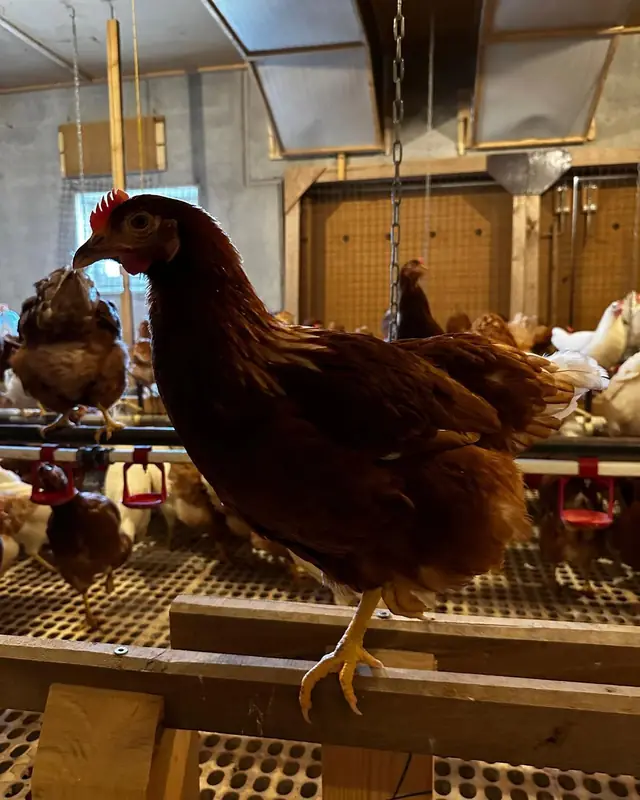
März 2020
Das SB-Lädle bleibt offen
Auch in der Corona-Zeit ist unser Selbstbedienungs-Lädle wie gewohnt für euch da. S'Lädle isch immer offa.
2020
Unsere erste Blühwiese
Gemeinsam mit vielen Blühwiesenpaten säen wir an der B296 zwischen Deckenpfronn und Stammheim eine Wiese für heimische Insekten. Bald sind Hummeln und Marienkäfer da. Vom Überschuss pflanzen wir zwei Zwetschgenbäume.
2021
Die zweite Blühwiese
Auch 2021 gibt es eine Blühwiese – diesmal an der B296 kurz vor Oberjesingen.
2023
Auf den Wochenmärkten
Samstags von 7 bis 12 Uhr stehen wir in Gärtringen, mittwochs in Böblingen – dort zusätzlich mit frischem Obst und Gemüse.
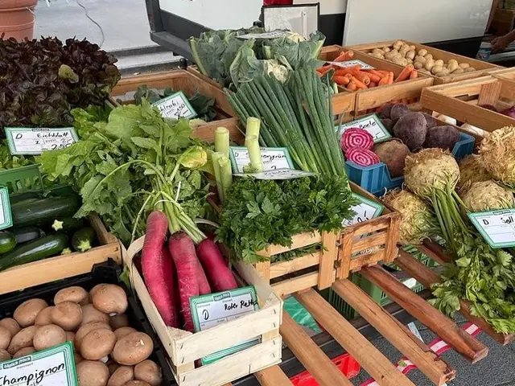
Herbst 2023
Eigene Äpfel, junge Hennen
Wir ernten die ersten Äpfel und Birnen von unseren Bäumen. Und ein Stall voll junger Hennen zieht bei uns ein.
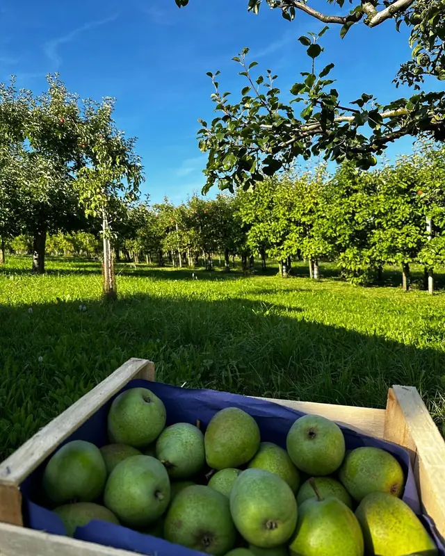
Frühjahr 2024
Ein Bus wird zum Hofladen
Regionales Einkaufen auf dem Land wird schwieriger. Wir kündigen ein neues Projekt an und bauen einen Bus zum mobilen Hofladen um.
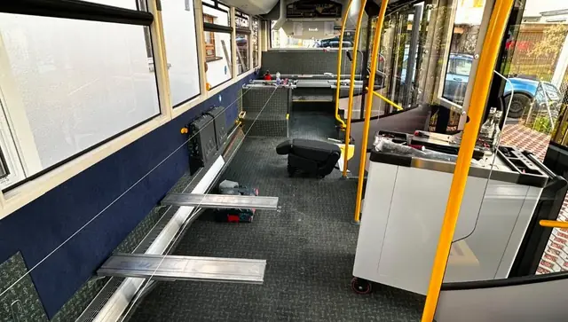
20. Juli 2024
Der Hofbus öffnet
Zum ersten Mal öffnet unser mobiler Hofladen. In Deckenpfronn ersetzt er seitdem unseren alten Laden direkt bei uns im Hof.
August 2024
Neue Haltestellen
Freitags fahren wir nach Gültlingen, dienstags nach Holzbronn. Das Calwer Journal berichtet über unseren mobilen Hofladen.
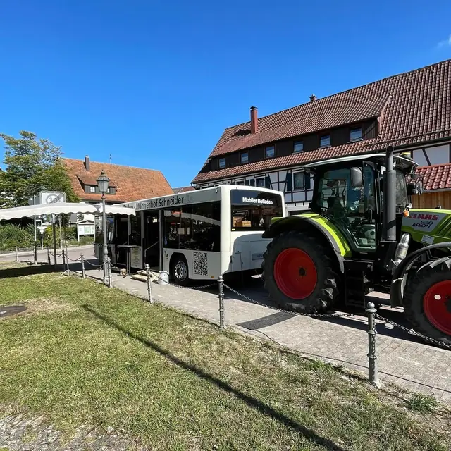
November 2024
Im Fernsehen und mit Karte
RTF1 zeigt einen Beitrag über uns von der Schön & Gut Messe in Münsingen. Und ab jetzt könnt ihr bei uns auch mit Karte zahlen.
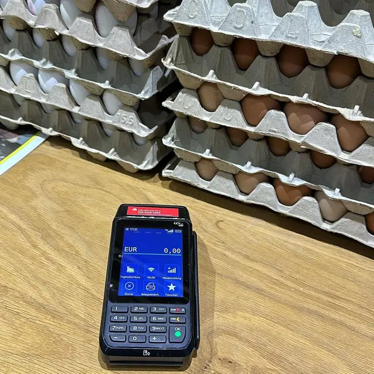
August 2025
Ein großes Projekt
Wir zeigen zum ersten Mal, woran wir seit Monaten arbeiten: Direkt am Hühnerhof entsteht ein neues Gebäude.
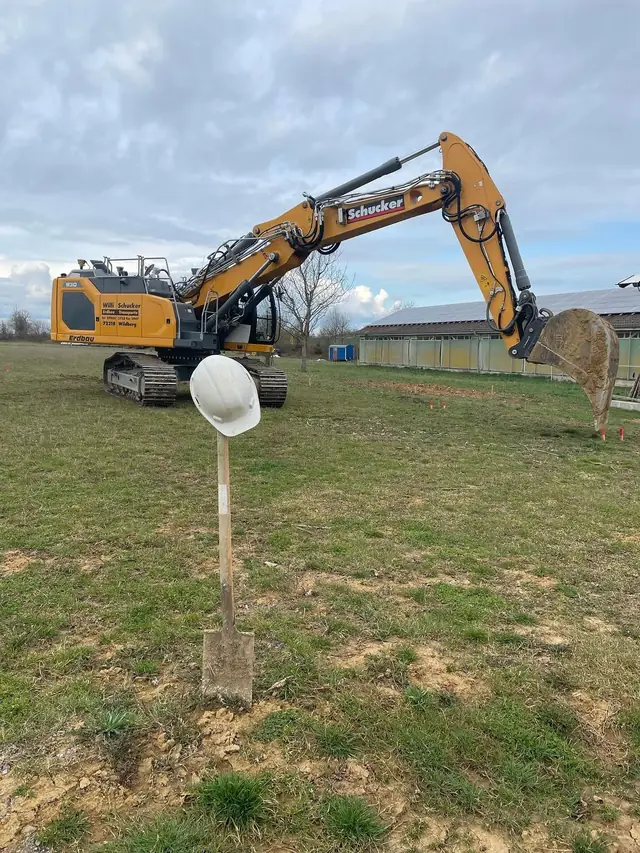
November 2025
Schindeln aus dem Allgäu
Wir besuchen das Schindelzentrum im Allgäu und nehmen die Holzschindeln gleich selbst im Auto mit.
März 2026
Ein erster Blick hinein
Im Obergeschoss liegt der Estrich. Wir kündigen an: Hofladen und Hofcafé öffnen im Herbst oder Winter.
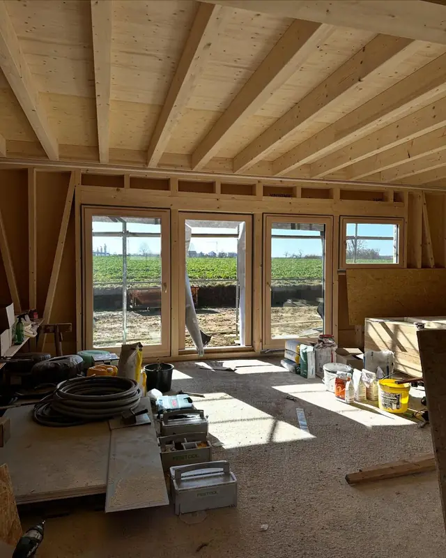
Juli 2026
Holzfassade und Schindelwand
Die Fassade bekommt ihr Holzkleid, die Außentreppe ins Obergeschoss steht, und oben ist die erste Wand mit Schindeln fertig.
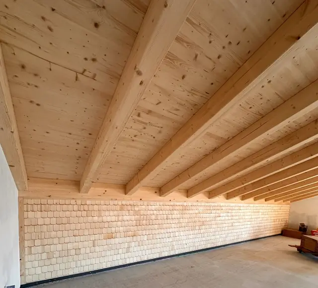
Kurz vor der Eröffnung
Das Herzstück zieht ein
Die Espressomaschine für das Hofcafé ist da.
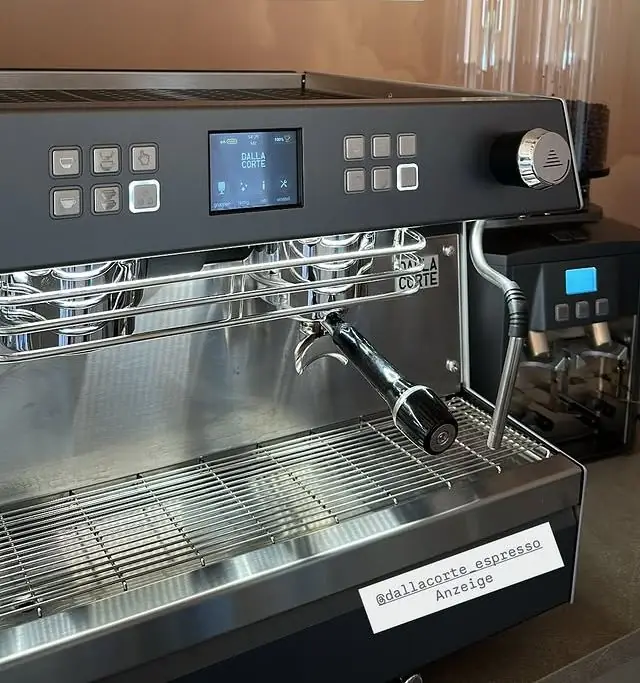
7. November 2026
Eröffnung
Schneiders Hofladen & Hofcafé öffnet in Mahden 1, Deckenpfronn – direkt bei uns am Hühnerhof.
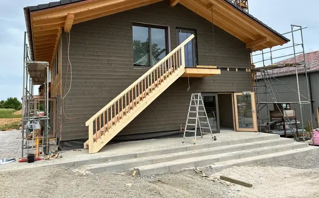
Kommt vorbei
Samstag, 7. November 2026, 10–17 Uhr, Mahden 1 in Deckenpfronn.
Zum Hofladen & HofcaféWir freuen uns auf euch!